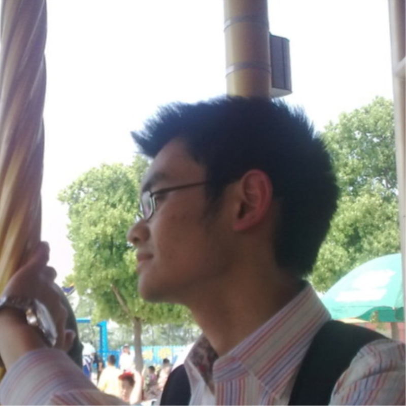

 and
write the blog together
Yellrush comes from Department of Computer Science and Technology, Nanjing University. Technology, soccer and game are his tags.
The fine young man, Erinnyes, is from Department of Industrial Design, Shanghai Jiaotong University. He is expected to become an inter-disciplinary talent of industry and art.
Visitor to this blog will get the technical experience and design inspiration we shared.
PS: New team member is welcome at any time.
Technology Articles
A short talk about human visual sensitivity region computation(In Chinese)